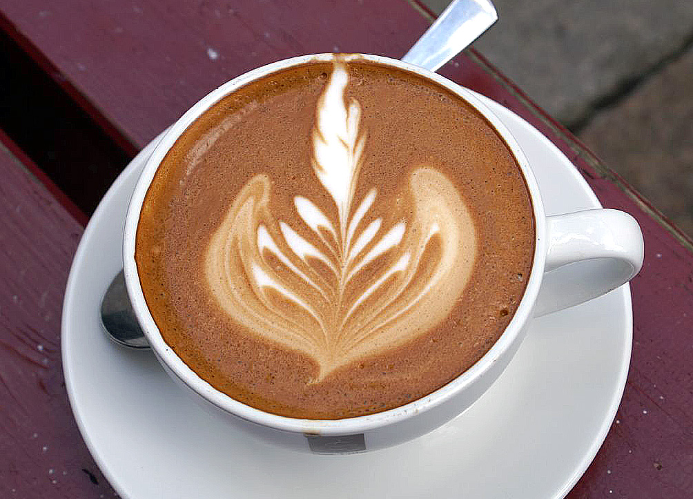

Prepare o café espresso: Faça uma dose de espresso usando seu método preferido (máquina de espresso, cafeteira Moka ou até mesmo um café forte e concentrado). Vaporize o leite: Aqueça e espume o leite. Isso pode ser feito usando a varinha de vapor de uma máquina de espresso, um espumador de leite dedicado (manual ou elétrico) ou até mesmo um batedor de arame no fogão. O objetivo é obter uma textura sedosa e cremosa com bolhas muito finas (microespuma), não uma espuma espessa e aerada. Observe o aumento do volume e a consistência cremosa. Combine os ingredientes: Despeje suavemente o leite vaporizado sobre o espresso preparado em sua xícara ou copo de servir. O leite deve ser o componente predominante, coberto por uma fina e brilhante camada de microespuma. Toque Gourmet (Opcional): Se desejar, tente fazer uma arte latte, derramando o leite habilmente para criar padrões na superfície. Adoce a gosto: Adicione adoçante, se preferir, mexendo suavemente para incorporar.